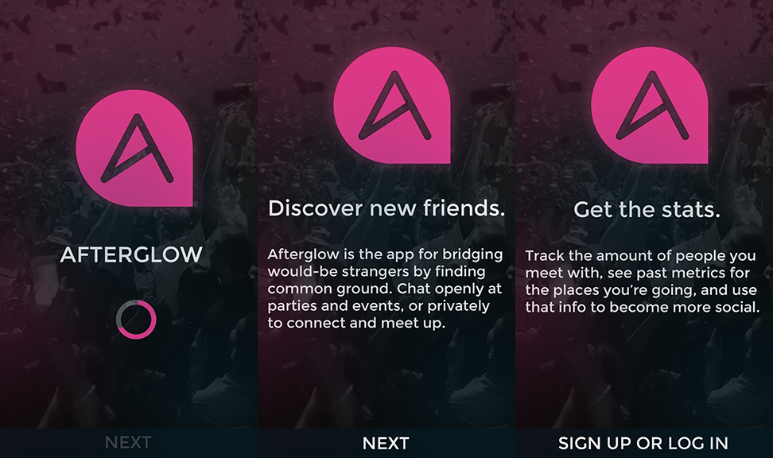

Discover new friends.
This is the landing page for my (presently) fictitious app, Afterglow. The idea actually came to me from the last party I went to. We're all in a gigantic house full of great people, shoulder to shoulder, but I noticed something.
Hardly anyone's making new connections, but everyone's on their phones.
I wanted to bridge the gap between myself, the awkward kid off in the corner by himself, the girl who won't stop crying about her boyfriend, and all of the people outside who can't stand the heat. Thinking back to my observation, I knew the easiest way to do that on a large scale would be through an app that allows everyone there to communicate together.
Afterglow is an app that allows would-be strangers to connect using their most obvious common property: their current location and activity.

For some, walking up and striking a conversation immediately isn't the easiest thing in the world. In fact, it feels more like you're going on a difficult quest with low-level equipment when in reality we're all just people. Afterglow is like the perfect wingman - it helps you publicly find the people that share your interests within an app. Chat publicly to talk to everyone there, or one-on-one with another user to meet up or just chat more.
Afterglow is really simple to use. Find your house or venue on the map, jump in the conversation, and type away. Add anyone you're around for a private conversation, and keep the ball rolling. Messages last for three days before self-destructing - plenty of time for partygoers and event attendees to go back and reference.
The biggest problem I faced in this design exercise was implementing the analytical aspects. What parameters, if any, would I even measure for an app like this?
The conclusion I came to was that it would be helpful for people attending an event in the future to be able to see data based on previous experiences. This translated to the amount of visits within a given time period, the percentage of people who directly connected on Afterglow (versus just visitors who logged in to chat publicly), and of course a rating for the location. I didn't have any concrete data to base the visitor parameter on, but I was able to improvise a good flow on the graph by associating a certain attendance rate with a day of the week. For example, people are much less likely to visit a venue on a Monday than they are on a Saturday.
The planning behind this was to make a really simple app, but also vibrant in its colour scheme to match the theme of party-goers and event attendees. It's really for capturing the eye while simultaneously staying relevant to the cause. As far as the design process, it took around four days.
The wireframes for this came pretty easily for me. They're usually my favourite part, mainly because it takes hardly any time to make a thumbnail sketch and express multiple ideas. It does, on the other hand, take a pretty huge amount of time to make full designs over again if you change your mind.
Thanks for taking the time to read through and look at my creative process! I always appreciate it. You can get a hold of me to talk more through:
Email: gear@iamthegear.com
Phone: 646-820-1751